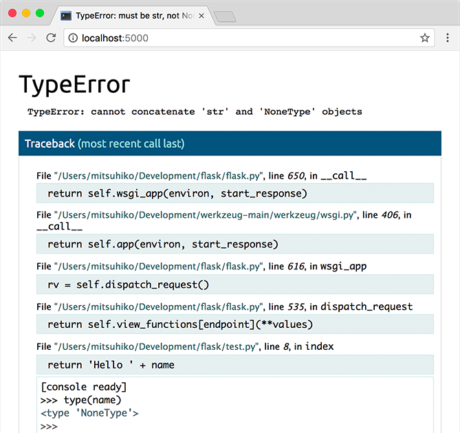

快速上手¶
等久了吧？本文会给您好好介绍如何上手 Flask 。 这里假定您已经安装好了 Flask ，否则请先阅读《 安装 》。
一个最小的应用¶
一个最小的 Flask 应用如下：
| Python | |
|---|---|
那么，这些代码是什么意思呢？
- 首先我们导入了 Flask 类。该类的实例将会成为我们的 WSGI 应用。
- 接着我们创建一个该类的实例。第一个参数是应用模块或者包的名称。
<font style="color:rgb(34, 34, 34);background-color:rgb(232, 239, 240);">__name__</font>是一个适用于大多数情况的快捷方式。有了这个参数， Flask 才能知道在哪里可以找到模板和静态文件等东西。 - 然后我们使用 route() 装饰器来告诉 Flask 触发函 数的 URL 。
- 函数返回需要在用户浏览器中显示的信息。默认的内容类型是 HTML ，因此 字符串中的 HTML 会被浏览器渲染。
把它保存为 <font style="color:rgb(34, 34, 34);background-color:rgb(232, 239, 240);">hello.py</font> 或其他类似名称。请不要使用 <font style="color:rgb(34, 34, 34);background-color:rgb(232, 239, 240);">flask.py</font> 作为应用名称，这会与 Flask 本身发生冲突。
可以使用 <font style="color:rgb(34, 34, 34);background-color:rgb(232, 239, 240);">flask</font> 命令或者 <font style="color:rgb(34, 34, 34);background-color:rgb(232, 239, 240);">python</font><font style="color:rgb(34, 34, 34);background-color:rgb(232, 239, 240);"> </font><font style="color:rgb(34, 34, 34);background-color:rgb(232, 239, 240);">-m</font><font style="color:rgb(34, 34, 34);background-color:rgb(232, 239, 240);"> </font><font style="color:rgb(34, 34, 34);background-color:rgb(232, 239, 240);">flask</font> 来运行这个应 用。你需要使用 <font style="color:rgb(34, 34, 34);background-color:rgb(232, 239, 240);">--app</font> 选项告诉 Flask 哪里可以找到应用。
| Python | |
|---|---|
应用发现行为
作为一个捷径，如果文件名为 <font style="color:rgb(34, 34, 34);background-color:rgb(232, 239, 240);">app.py</font> 或者 <font style="color:rgb(34, 34, 34);background-color:rgb(232, 239, 240);">wsgi.py</font> ，那么您不 需要使用 <font style="color:rgb(34, 34, 34);background-color:rgb(232, 239, 240);">--app</font> 。详见 命令行接口 。
这样就启动了一个非常简单的内建的服务器。这个服务器用于测试应该是足够 了，但是用于生产可能是不够的。关于部署的有关内容参见 生产部署 。
现在在浏览器中打开 http://127.0.0.1:5000/ ，应该可以看到 Hello World! 字样。
如果其他程序已经占用了 5000 端口，那么在尝试启动服务器时会看到 <font style="color:rgb(34, 34, 34);background-color:rgb(232, 239, 240);">OSError:</font><font style="color:rgb(34, 34, 34);background-color:rgb(232, 239, 240);"> </font><font style="color:rgb(34, 34, 34);background-color:rgb(232, 239, 240);">[Errno</font><font style="color:rgb(34, 34, 34);background-color:rgb(232, 239, 240);"> </font><font style="color:rgb(34, 34, 34);background-color:rgb(232, 239, 240);">98]</font> 或者 <font style="color:rgb(34, 34, 34);background-color:rgb(232, 239, 240);">OSError:</font><font style="color:rgb(34, 34, 34);background-color:rgb(232, 239, 240);"> </font><font style="color:rgb(34, 34, 34);background-color:rgb(232, 239, 240);">[WinError</font><font style="color:rgb(34, 34, 34);background-color:rgb(232, 239, 240);"> </font><font style="color:rgb(34, 34, 34);background-color:rgb(232, 239, 240);">10013]</font> ， 如何解决这个问题请参阅 地址已被占用 。
外部可见的服务器
运行服务器后，会发现只有您自己的电脑可以使用服务，而网络中的其他电 脑却不行。缺省设置就是这样的，因为在调试模式下该应用的用户可以执行 您电脑中的任意 Python 代码。
如果您关闭了调试器或信任您网络中的用户，那么可以让服务器被公开访问。 只要在命令行上简单的加上 <font style="color:rgb(34, 34, 34);background-color:rgb(232, 239, 240);">--host=0.0.0.0</font> 即可:
| Python | |
|---|---|
这行代码告诉您的操作系统监听所有公开的 IP 。
调试模式¶
<font style="color:rgb(34, 34, 34);background-color:rgb(232, 239, 240);">flask</font><font style="color:rgb(34, 34, 34);background-color:rgb(232, 239, 240);"> </font><font style="color:rgb(34, 34, 34);background-color:rgb(232, 239, 240);">run</font> 命令不只可以启动开发服务器。如果您打开调试模式，那么服 务器会在修改应用代码之后自动重启，并且当请求过程中发生错误时还会在浏 览器中提供一个交互调试器。

Warning
调试器允许执行来自浏览器的任意 Python 代码。虽然它由一个 pin 保护， 但仍然存在巨大安全风险。不要在生产环境中运行开发服务器或调试器。
如果要打开调试模式，请使用 <font style="color:rgb(34, 34, 34);background-color:rgb(232, 239, 240);">--debug</font> 选项。
| Python | |
|---|---|
另见：
HTML 转义¶
当返回 HTML （ Flask 中的默认响应类型）时，为了防止注入攻击，所有用户 提供的值在输出渲染前必须被转义。使用 Jinja （这个稍后会介绍）渲染的 HTML 模板会自动执行此操作。
在下面展示的 **<font style="color:rgb(34, 34, 34);">escape()</font>** 可以手动转义。因为保持简洁的 原因，在多数示例中它被省略了，但您应该始终留心处理不可信的数据。
| Python | |
|---|---|
如果一个用户想要提交其名称为 <font style="color:rgb(34, 34, 34);background-color:rgb(232, 239, 240);"><script>alert("bad")</script></font> ，那么 宁可转义为文本，也好过在浏览器中执行脚本。
路由中的 <font style="color:rgb(34, 34, 34);background-color:rgb(232, 239, 240);"><name></font> 从 URL 中捕获值并将其传递给视图函数。这些变量规则 见下文。
路由¶
现代 web 应用都使用有意义的 URL ，这样有助于用户记忆，网页会更得到用 户的青睐，提高回头率。
使用 route() 装饰器来把函数绑定到 URL:
| Python | |
|---|---|
但是能做的不仅仅是这些！您可以动态变化 URL 的某些部分， 还可以为一个函数指定多个规则。
变量规则¶
通过把 URL 的一部分标记为 <font style="color:rgb(34, 34, 34);background-color:rgb(232, 239, 240);"><variable_name></font> 就可以在 URL 中添加变量。 标记的部分会作为关键字参数传递给函数。通过使用 <font style="color:rgb(34, 34, 34);background-color:rgb(232, 239, 240);"><converter:variable_name></font> ，可以选择性的加上一个转换器，为变量指 定规则。请看下面的例子:
转换器类型：
<font style="color:rgb(34, 34, 34);background-color:rgb(232, 239, 240);">string</font> |
（缺省值） 接受任何不包含斜杠的文本 |
|---|---|
<font style="color:rgb(34, 34, 34);background-color:rgb(232, 239, 240);">int</font> |
接受正整数 |
<font style="color:rgb(34, 34, 34);background-color:rgb(232, 239, 240);">float</font> |
接受正浮点数 |
<font style="color:rgb(34, 34, 34);background-color:rgb(232, 239, 240);">path</font> |
类似 <font style="color:rgb(34, 34, 34);background-color:rgb(232, 239, 240);">string</font> ，但可以包含斜杠 |
<font style="color:rgb(34, 34, 34);background-color:rgb(232, 239, 240);">uuid</font> |
接受 UUID 字符串 |
唯一的 URL / 重定向行为¶
以下两条规则的不同之处在于是否使用尾部的斜杠。:
| Python | |
|---|---|
<font style="color:rgb(34, 34, 34);background-color:rgb(232, 239, 240);">projects</font> 的 URL 是中规中矩的，尾部有一个斜杠，看起来就如同一个文 件夹。访问一个没有斜杠结尾的 URL （ <font style="color:rgb(34, 34, 34);background-color:rgb(232, 239, 240);">/projects</font> ）时 Flask 会自动进 行重定向，帮您在尾部加上一个斜杠（ <font style="color:rgb(34, 34, 34);background-color:rgb(232, 239, 240);">/projects/</font> ）。
<font style="color:rgb(34, 34, 34);background-color:rgb(232, 239, 240);">about</font> 的 URL 没有尾部斜杠，因此其行为表现与一个文件类似。如果访问 这个 URL 时添加了尾部斜杠（ <font style="color:rgb(34, 34, 34);background-color:rgb(232, 239, 240);">/about/</font> ）就会得到一个 404 “未找到” 错误。这样可以保持 URL 唯一，并有助于搜索引擎重复索引同一 页面。
URL 构建¶
url_for() 函数用于构建指定函数的 URL。它把函数名称作为第 一个参数。它可以接受任意个关键字参数，每个关键字参数对应 URL 中的变量。 未知变量将添加到 URL 中作为查询参数。
为什么不在把 URL 写死在模板中，而要使用反转函数 url_for() 动态构建？
- 反转通常比硬编码 URL 的描述性更好。
- 您可以只在一个地方改变 URL ，而不用到处乱找。
- URL 创建会为您处理特殊字符的转义，比较直观。
- 生产的路径总是绝对路径，可以避免相对路径产生副作用。
- 如果您的应用是放在 URL 根路径之外的地方（如在
<font style="color:rgb(34, 34, 34);background-color:rgb(232, 239, 240);">/myapplication</font>中，不在<font style="color:rgb(34, 34, 34);background-color:rgb(232, 239, 240);">/</font>中）， url_for() 会为您妥善处理。
例如，这里我们使用 test_request_context() 方法来尝 试使用 url_for() 。 test_request_context() 告诉 Flask 正在处理一个请求， 而实际上也许我们正处在交互 Python shell 之中，并没有真正的请求。参见 本地环境 。
HTTP 方法¶
Web 应用使用不同的 HTTP 方法处理 URL 。当您使用 Flask 时，应当熟悉 HTTP 方法。缺省情况下，一个路由只回应 <font style="color:rgb(34, 34, 34);background-color:rgb(232, 239, 240);">GET</font> 请求。可以使用 route() 装饰器的 <font style="color:rgb(34, 34, 34);background-color:rgb(232, 239, 240);">methods</font> 参数来处理不同的 HTTP 方法。
| Python | |
|---|---|
上例中把路由的所有方法都放在同一个函数中，当每个方法都使用一些共同的 数据时，这样是有用的。
你也可以把不同方法所对应的视图分别放在独立的函数中。 Flask 为每个常用 的 HTTP 方法提供了捷径，如 get() 、 post() 等等。
| Python | |
|---|---|
如果当前使用了 <font style="color:rgb(34, 34, 34);background-color:rgb(232, 239, 240);">GET</font> 方法， Flask 会自动添加 <font style="color:rgb(34, 34, 34);background-color:rgb(232, 239, 240);">HEAD</font> 方法支持，并 且同时还会按照 HTTP RFC 来处理 <font style="color:rgb(34, 34, 34);background-color:rgb(232, 239, 240);">HEAD</font> 请求。同样， <font style="color:rgb(34, 34, 34);background-color:rgb(232, 239, 240);">OPTIONS</font> 也会自动实现。
静态文件¶
动态的 web 应用也需要静态文件，一般是 CSS 和 JavaScript 文件。理想情 况下您的服务器已经配置好了为您的提供静态文件的服务。但是在开发过程中， Flask 也能做好这项工作。只要在您的包或模块旁边创建一个名为 <font style="color:rgb(34, 34, 34);background-color:rgb(232, 239, 240);">static</font> 的文件夹就行了。静态文件位于应用的 <font style="color:rgb(34, 34, 34);background-color:rgb(232, 239, 240);">/static</font> 中。
使用特定的 <font style="color:rgb(34, 34, 34);background-color:rgb(232, 239, 240);">'static'</font> 端点就可以生成相应的 URL
| Python | |
|---|---|
这个静态文件在文件系统中的位置应该是 <font style="color:rgb(34, 34, 34);background-color:rgb(232, 239, 240);">static/style.css</font> 。
渲染模板¶
在 Python 内部生成 HTML 不好玩，且相当笨拙。因为您必须自己负责 HTML 转义，以确保应用的安全。因此， Flask 自动为您配置 Jinja2 模板引擎。
模板可被用于生成任何类型的文本文件。对于 web 应用来说，主要用于生成 HTML 页面，但是也可以生成 markdown 、用于电子邮件的纯文本等等。
HTML 、 CSS 和其他 web API ，请参阅 MDN Web 文档 。
使用 render_template() 方法可以渲染模板，您只要提供模板 名称和需要作为参数传递给模板的变量就行了。下面是一个简单的模板渲染例 子:
| Python | |
|---|---|
Flask 会在 <font style="color:rgb(34, 34, 34);background-color:rgb(232, 239, 240);">templates</font> 文件夹内寻找模板。因此，如果您的应用是一 个模块，那么模板文件夹应该在模块旁边；如果是一个包，那么就应该在包里 面：
情形 1 : 一个模块:
情形 2 : 一个包:
您可以充分使用 Jinja2 模板引擎的威力。更多内容，详见官方 Jinja2 模板文档 。
模板示例：
| Python | |
|---|---|
在模板内部可以像使用 url_for() 和 get_flashed_messages() 函数一样访问 config 、 request 、 session 和 g 1 对象。
模板在继承使用的情况下尤其有用。其工作原理参见 模板继承 。简单的说，模板继承可以使每个页 面的特定元素（如页头、导航和页尾）保持一致。
自动转义默认开启。因此，如果 <font style="color:rgb(34, 34, 34);background-color:rgb(232, 239, 240);">name</font> 包含 HTML ，那么会被自动转义。 如果您可以信任某个变量，且知道它是安全的 HTML （例如变量来自一个把 wiki 标记转换为 HTML 的模块），那么可以使用 **<font style="color:rgb(34, 34, 34);">Markup</font>** 类把它标记为安全的，或者在模板中使用 <font style="color:rgb(34, 34, 34);background-color:rgb(232, 239, 240);">|safe</font> 过滤器。更多例子参见 Jinja 2 文档。
下面 **<font style="color:rgb(34, 34, 34);">Markup</font>** 类的基本使用方法:
Changelog
不确定 g 对象是什么？它是某个可以根据需要储存 信息的东西，详见 g 对象的文档和 使用 SQLite 3 。
操作请求数据¶
对于 web 应用来说对客户端向服务器发送的数据作出响应很重要。在 Flask 中由全局对象 request 来提供请求信息。如果您有一些 Python 基础，那么可能 会奇怪：既然这个对象是全局的，怎么还能保持线程 安全？答案是本地环境：
本地环境¶
内部信息
如果您想了解工作原理和如何使用本地环境进行测试，那么请阅读本节， 否则可以跳过本节。
某些对象在 Flask 中是全局对象，但不是通常意义下的全局对象。这些对象实 际上是特定环境下本地对象的代理。真拗口！但还是很容易理解的。
设想现在处于处理线程的环境中。一个请求进来了，服务器决定生成一个新线 程（或者叫其他什么名称的东西，这个下层的东西能够处理包括线程在内的并 发系统）。当 Flask 开始其内部请求处理时会把当前线程作为活动环境，并把 当前应用和 WSGI 环境绑定到这个环境（线程）。它以一种聪明的方式使得一 个应用可以在不中断的情况下调用另一个应用。
这对您有什么用？基本上您可以完全不必理会。这个只有在做单元测试时才有 用。在测试时会遇到由于没有请求对象而导致依赖于请求的代码会突然崩溃的 情况。对策是自己创建一个请求对象并绑定到环境。最简单的单元测试解决方 案是使用 test_request_context() 环境管理器。通过使 用 <font style="color:rgb(34, 34, 34);background-color:rgb(232, 239, 240);">with</font> 语句可以绑定一个测试请求，以便于交互。例如:
| Python | |
|---|---|
另一种方式是把整个 WSGI 环境传递给 request_context() 方法:
请求对象¶
请求对象在 API 一节中有详细说明这里不细谈（参见 Request ）。这里简略地谈一下最常见的操作。首先，您必 须从 <font style="color:rgb(34, 34, 34);background-color:rgb(232, 239, 240);">flask</font> 模块导入请求对象:
| Python | |
|---|---|
通过使用 method 属性可以操作当前请求方法，通过 使用 form 属性处理表单数据（在 <font style="color:rgb(34, 34, 34);background-color:rgb(232, 239, 240);">POST</font> 或者 <font style="color:rgb(34, 34, 34);background-color:rgb(232, 239, 240);">PUT</font> 请求中传输的数据）。以下是使用上述两个属性的例子:
当 <font style="color:rgb(34, 34, 34);background-color:rgb(232, 239, 240);">form</font> 属性中不存在这个键时会发生什么？会引发一个 KeyError 。如果您不像捕捉一个标准错误一样捕捉 KeyError ， 那么会显示一个 HTTP 400 Bad Request 错误页面。因此，多数情况下您不必 处理这个问题。
要操作 URL （如 <font style="color:rgb(34, 34, 34);background-color:rgb(232, 239, 240);">?key=value</font> ）中提交的参数可以使用 args 属性:
| Python | |
|---|---|
用户可能会改变 URL 导致出现一个 400 请求出错页面，这样降低了用户友好 度。因此，我们推荐使用 get 或通过捕捉 KeyError 来访问 URL 参数。
完整的请求对象方法和属性参见 Request 文档。
文件上传¶
用 Flask 处理文件上传很容易，只要确保不要忘记在您的 HTML 表单中设置 <font style="color:rgb(34, 34, 34);background-color:rgb(232, 239, 240);">enctype="multipart/form-data"</font> 属性就可以了。否则浏览器将不会传送 您的文件。
已上传的文件被储存在内存或文件系统的临时位置。您可以通过请求对象 **<font style="color:rgb(34, 34, 34);">files</font>** 属性来访问上传的文件。每个上传的文件都储 存在这个字典型属性中。这个属性基本和标准 Python **<font style="color:rgb(34, 34, 34);">file</font>** 对象一 样，另外多出一个用于把上传文件保存到服务器的文件系统中的 save() 方法。下例展示其如 何运作:
| Python | |
|---|---|
如果想要知道文件上传之前其在客户端系统中的名称，可以使用 filename 属性。但是请牢 记这个值是可以伪造的，永远不要信任这个值。如果想要把客户端的文件名作 为服务器上的文件名，可以通过 Werkzeug 提供的 secure_filename() 函数:
| Python | |
|---|---|
更好的例子参见 上传文件 。
Cookies¶
要访问 cookies ，可以使用 cookies 属性。可以使 用响应对象 的 set_cookie 方法来设置 cookies 。 请求对象的 cookies 属性是一个包含了客户端传输 的所有 cookies 的字典。在 Flask 中，如果使用 会话 ，那么就 不要直接使用 cookies ，因为 会话 比较安全一些。
读取 cookies:
| Python | |
|---|---|
储存 cookies:
| Python | |
|---|---|
注意， cookies 设置在响应对象上。通常只是从视图函数返回字符串， Flask 会把它们转换为响应对象。如果您想显式地转换，那么可以使用 make_response() 函数，然后再修改它。
使用 doc:patterns/deferredcallbacks 方案可以在没有响应对象的情况下 设置一个 cookie 。
另见 关于响应 。
重定向和错误¶
使用 redirect() 函数可以重定向。使用 abort() 可以更早退出请求，并返回错误代码:
| Python | |
|---|---|
上例实际上是没有意义的，它让一个用户从索引页重定向到一个无法访问的页 面（401 表示禁止访问）。但是上例可以说明重定向和出错跳出是如何工作的。
缺省情况下每种出错代码都会对应显示一个黑白的出错页面。使用 errorhandler() 装饰器可以定制出错页面:
| Python | |
|---|---|
注意 render_template() 后面的 <font style="color:rgb(34, 34, 34);background-color:rgb(232, 239, 240);">404</font> ，这表示页面对就的 出错代码是 404 ，即页面不存在。缺省情况下 200 表示：一切正常。
详见 应用错误处理 。
关于响应¶
视图函数的返回值会自动转换为一个响应对象。如果返回值是一个字符串，那 么会被转换为一个包含作为响应体的字符串、一个 <font style="color:rgb(34, 34, 34);background-color:rgb(232, 239, 240);">200</font><font style="color:rgb(34, 34, 34);background-color:rgb(232, 239, 240);"> </font><font style="color:rgb(34, 34, 34);background-color:rgb(232, 239, 240);">OK</font> 出错代码 和一 个 text/html 类型的响应对象。如果返回值是一个字典或者列表， 那么会调用 **<font style="color:rgb(34, 34, 34);">jsonify()</font>** 来产生一个响应。以下是转换的规则：
- 如果视图返回的是一个响应对象，那么就直接返回它。
- 如果返回的是一个字符串，那么根据这个字符串和缺省参数生成一个用于 返回的响应对象。
- 如果返回的是一个迭代器或者生成器，那么返回字符串或者字节，作为流 响应对待。
- 如果返回的是一个字典或者列表，那么使用 jsonify() 创建一个响应对象。
- 如果返回的是一个元组，那么元组中的项目可以提供额外的信息。元组中 必须至少包含一个项目，且项目应当由
<font style="color:rgb(34, 34, 34);background-color:rgb(232, 239, 240);">(response,</font><font style="color:rgb(34, 34, 34);background-color:rgb(232, 239, 240);"> </font><font style="color:rgb(34, 34, 34);background-color:rgb(232, 239, 240);">status)</font>、<font style="color:rgb(34, 34, 34);background-color:rgb(232, 239, 240);">(response,</font><font style="color:rgb(34, 34, 34);background-color:rgb(232, 239, 240);"> </font><font style="color:rgb(34, 34, 34);background-color:rgb(232, 239, 240);">headers)</font>或者<font style="color:rgb(34, 34, 34);background-color:rgb(232, 239, 240);">(response,</font><font style="color:rgb(34, 34, 34);background-color:rgb(232, 239, 240);"> </font><font style="color:rgb(34, 34, 34);background-color:rgb(232, 239, 240);">status,</font><font style="color:rgb(34, 34, 34);background-color:rgb(232, 239, 240);"> </font><font style="color:rgb(34, 34, 34);background-color:rgb(232, 239, 240);">headers)</font>组 成。<font style="color:rgb(34, 34, 34);background-color:rgb(232, 239, 240);">status</font>的值会重载状态代码，<font style="color:rgb(34, 34, 34);background-color:rgb(232, 239, 240);">headers</font>是一个由额外头部 值组成的列表或字典。 - 如果以上都不是，那么 Flask 会假定返回值是一个有效的 WSGI 应用并把 它转换为一个响应对象。
如果想要在视图内部掌控响应对象的结果，那么可以使用 make_response() 函数。
设想有如下视图:
可以使用 make_response() 包裹返回表达式，获得响应对象， 并对该对象进行修改，然后再返回:
| Python | |
|---|---|
JSON 格式的 API¶
JSON 格式的响应是常见的，用 Flask 写这样的 API 是很容易上手的。如果从 视图返回一个 <font style="color:rgb(34, 34, 34);background-color:rgb(232, 239, 240);">dict</font> 或者 <font style="color:rgb(34, 34, 34);background-color:rgb(232, 239, 240);">list</font> ，那么它会被转换为一个 JSON 响应。
| Python | |
|---|---|
如果 <font style="color:rgb(34, 34, 34);background-color:rgb(232, 239, 240);">dict</font> 还不能满足需求，还需要创建其他类型的 JSON 格式响应，可 以使用 jsonify() 函数。该函数会序列化任何支持的 JSON 数据类型。也可以研究研究 Flask 社区扩展，以支持更复杂的应用。
| Python | |
|---|---|
这是一个向 jsonify() 函数传递数据的捷径，可以序列化 任何支持的 JSON 数据类型。这也意味着在字典和列表中的所有数据必须可以 被序列化。
对于复杂的数据类型，如数据库模型，你需要使用序列化库先把数据转换为合 法的 JSON 类型。有许多库，以及社区维护的 Flask API 扩展可以处理复杂数 据类型，
会话¶
除了请求对象之外还有一种称为 session 的对象，允许您在 不同请求之间储存信息。这个对象相当于用密钥签名加密的 cookie ，即用户 可以查看您的 cookie ，但是如果没有密钥就无法修改它。
使用会话之前您必须设置一个密钥。举例说明:
如何生成一个好的密钥
生成随机数的关键在于一个好的随机种子，因此一个好的密钥应当有足够 的随机性。操作系统可以有多种方式基于密码随机生成器来生成随机数据。 使用下面的命令可以快捷的为 **<font style="color:rgb(34, 34, 34);background-color:rgb(250, 250, 250);">Flask.secret_key</font>** （ 或者 SECRET_KEY ）生成值:
| Python | |
|---|---|
基于 cookie 的会话的说明： Flask 会取出会话对象中的值，把值序列化后储 存到 cookie 中。在打开 cookie 的情况下，如果需要查找某个值，但是这个 值在请求中没有持续储存的话，那么不会得到一个清晰的出错信息。请检查页 面响应中的 cookie 的大小是否与网络浏览器所支持的大小一致。
除了缺省的客户端会话之外，还有许多 Flask 扩展支持服务端会话。
消息闪现¶
一个好的应用和用户接口都有良好的反馈，否则到后来用户就会讨厌这个应用。 Flask 通过闪现系统来提供了一个易用的反馈方式。闪现系统的基本工作原理 是在请求结束时记录一个消息，提供且只提供给下一个请求使用。通常通过一 个布局模板来展现闪现的消息。
flash() 用于闪现一个消息。在模板中，使用 get_flashed_messages() 来操作消息。完整的例子参见 消息闪现 。
日志¶
Changelog
有时候可能会遇到数据出错需要纠正的情况。例如因为用户篡改了数据或客户 端代码出错而导致一个客户端代码向服务器发送了明显错误的 HTTP 请求。多 数时候在类似情况下返回 <font style="color:rgb(34, 34, 34);background-color:rgb(232, 239, 240);">400</font><font style="color:rgb(34, 34, 34);background-color:rgb(232, 239, 240);"> </font><font style="color:rgb(34, 34, 34);background-color:rgb(232, 239, 240);">Bad</font><font style="color:rgb(34, 34, 34);background-color:rgb(232, 239, 240);"> </font><font style="color:rgb(34, 34, 34);background-color:rgb(232, 239, 240);">Request</font> 就没事了，但也有不会返回的 时候，而代码还得继续运行下去。
这时候就需要使用日志来记录这些不正常的东西了。自从 Flask 0.3 后就已经 为您配置好了一个日志工具。
以下是一些日志调用示例:
| Python | |
|---|---|
logger 是一个标准的日志 Logger 类，更多信息详见官方的 logging 文档。
参见 应用错误处理 。
集成 WSGI 中间件¶
如果想要在应用中添加一个 WSGI 中间件，那么可以用应用的 <font style="color:rgb(34, 34, 34);background-color:rgb(232, 239, 240);">wsgi_app</font> 属性来包装。例如，假设需要在 Nginx 后面使用 ProxyFix 中间件，那么可以这样 做:
用 <font style="color:rgb(34, 34, 34);background-color:rgb(232, 239, 240);">app.wsgi_app</font> 来包装，而不用 <font style="color:rgb(34, 34, 34);background-color:rgb(232, 239, 240);">app</font> 包装，意味着 <font style="color:rgb(34, 34, 34);background-color:rgb(232, 239, 240);">app</font> 仍旧 指向您的 Flask 应用，而不是指向中间件。这样可以继续直接使用和配置 <font style="color:rgb(34, 34, 34);background-color:rgb(232, 239, 240);">app</font> 。
使用 Flask 扩展¶
扩展是帮助完成公共任务的包。例如 Flask-SQLAlchemy 为在 Flask 中轻松使 用 SQLAlchemy 提供支持。
更多关于 Flask 扩展的内容请参阅 扩展 。
部署到网络服务器¶
已经准备好部署您的新 Flask 应用了？请移步 生产部署 。